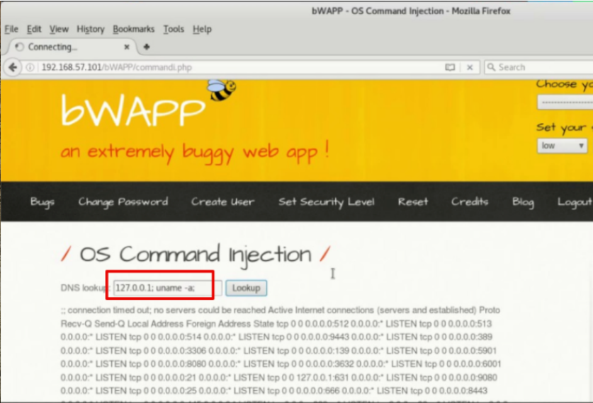
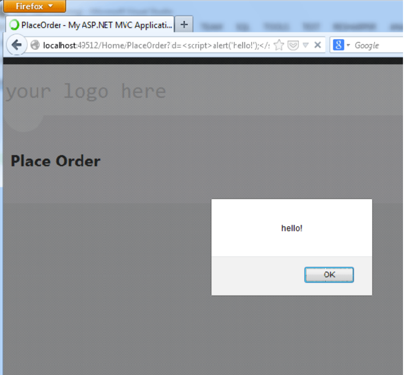

07.-Validación de los puntos de entrada
Las pruebas de validación de entrada verifican si una aplicación maneja correctamente los datos proporcionados por los usuarios. Si los datos de entrada no se validan adecuadamente, pueden generar fallos de seguridad graves, permitiendo a atacantes modificar el comportamiento de la aplicación, acceder a datos restringidos o comprometer el servidor.
Vulnerabilidades que Impactan en el Servidor¶
Inyección SQL (SQL Injection - SQLi)¶
Este ataque ocurre cuando los datos ingresados por un usuario se usan directamente en consultas SQL sin validación. Un atacante puede inyectar código SQL malicioso para manipular, extraer o eliminar información de la base de datos.
Ejemplo de vulnerabilidad SQLi¶
Si una aplicación permite filtrar productos por categoría con una URL como:
https://tienda.com/productos?categoria=electronica
Internamente, la aplicación ejecuta:
SELECT * FROM productos WHERE categoria='electronica'
Un atacante podría modificar la consulta para acceder a otros datos sensibles:
https://tienda.com/productos?categoria=' UNION SELECT usuario, contraseña FROM usuarios --
Esto alteraría la consulta SQL:
SELECT * FROM productos WHERE categoria='' UNION SELECT usuario, contraseña FROM usuarios --
Mostrando nombres de usuario y contraseñas en los resultados.
Prevención¶
- Usar consultas parametrizadas (
Prepared Statements). - Escapar caracteres especiales antes de procesar entradas del usuario.
- Implementar un firewall de aplicaciones web (WAF).
Inyección SQL Ciega¶
Este tipo de vulnerabilidades afectan al servidor. Este tipo de inyecciones de código son muy parecidas a las anteriores, su única diferencia es que la consulta SQL no devuelve ningún resultado visible al usuario, o cuando el aplicativo no nos permite concatenar consultas para extraer más información de la Base de Datos. En estos casos particulares sólo podemos inyectar consultas de tipo Booleanas (verdadero o falso) y comprobar los resultados devueltos por el aplicativo web para evaluar si el resultado de la consulta retorna “verdadero” o “falso” dependiendo si observamos algún cambio en el resultado devuelto.
Ejemplo de ataque SQLi Ciego¶
Un atacante podría enviar:
?id=10 AND 1=1 --
Si la consulta devuelve datos, el atacante sabe que la inyección es posible. Luego probaría una condición falsa:
?id=10 AND 1=2 --
Si no hay resultados, confirma que la aplicación es vulnerable y puede extraer información carácter por carácter.El método anterior nos puede servir para comprobar si el aplicativo es vulnerable ante ataques de tipo “Inyección de SQL Ciega”. Sin embargo, para poder volcar información de la BBDD, existe un método que consiste en modificar la consulta SQL que se realizaría a una consulta SQL Booleana. Las consultas serían de este tipo:
- “¿El primer carácter de la contraseña del usuario administrador es una B?”
- “¿Es una C?”, etc.
Además, dado que tendríamos que realizar una consulta para cada carácter que queramos consultar por cada posición, podríamos llegar a realizar hasta 300 consultas únicamente para averiguar el primer carácter de un único registro en la base de datos.
Para poder aumentar la velocidad en la extracción de datos se utiliza el concepto de divide y vencerás. Para ello se utiliza el valor numérico ASCII de cada carácter. De esta manera se pueden realizar consultas de tipo:
- “¿El valor ASCII del primer carácter de la contraseña del usuario administrador es mayor que 100?”
- “¿Es menor que 100?”, etc.
En la siguiente captura se muestra la sintaxis de inyección para averiguar el primer carácter del usuario con el que se está accediendo a la Base de Datos.
id=1 and 100>ASCII(substring(user(),1,1)) -> Falso
id=1 and 150>ASCII(substring(user(),1,1)) -> Verdadero
id=1 and 110>ASCII(substring(user(),1,1)) -> Falso
id=1 and 125>ASCII(substring(user(),1,1)) -> Verdadero
id=1 and 115>ASCII(substring(user(),1,1)) -> Falso
id=1 and 113>ASCII(substring(user(),1,1)) -> Verdadero
id=1 and 114=ASCII(substring(user(),1,1))
En este caso, si comprobamos a qué carácter se corresponde el valor ASCII de 114, observaremos que el primer carácter del nombre de usuario con el que el aplicativo accede a la Base de Datos es “r”.
Automatización con sqlmap¶
sqlmap es una herramienta que es capaz de automatizar la extracción de información dada una vulnerabilidad de inyección SQL. Contiene distintos payloads para los motores de bases de datos más comunes. De esta manera, nos puede ayudar en la extracción específica de información ya que automáticamente ajusta la inyección SQL para realizar la consulta SQL necesaria para extraer la información requerida.
Es extremadamente útil en inyecciones de tipo SQL ciega en la que la extracción de datos se vuelve tan tediosa, sqlmap puede automatizar esta extracción.
Aunque también nos permite localizar vulnerabilidades de inyección se recomienda localizar la vulnerabilidad con las técnicas anteriormente descritas (o incluso mediante el scanner automático de Burp Suite) debido a la cantidad de datos que genera.
El funcionamiento general de sqlmap es invocarlo con el parámetro -u e indicarle la url (con el path completo) si la propia URL contiene los parámetros vulnerables ante una inyección SQL con el parámetro -p se indica el parámetro sobre el que se realizará la inyección.
El siguiente ejemplo, muestra el uso de sqlmap pasando una URL vulnerable que además dispone de un parámetro vulnerable id.
sqlmap -u "http://debiandev/sqlmap/mysql/get_int.php?id=1" -p id
$ python sqlmap.py -u "http://debainadev/sqlmap/mysql/get_int.php?id=1" --batch
(1.3.4.44dev)
http://sqlmap.org
[!] legal disclaimer: Usage of sqlmap for attacking targets without prior mutual consent
is illegal. It is the end user's responsibility to obey all applicable local, state and
federal laws. Developers assume no liability and are not responsible for any misuse or
damage caused by this program
[*] starting @ 10:44:53 /2019-04-30/
[10:44:53] [INFO] testing connection to the target URL
[10:44:54] [INFO] heuristics detected the target is protected by some kind of WAF/IPS
[10:44:54] [INFO] testing if the target URL content is stable
[10:44:54] [INFO] target URL content is stable
[10:44:54] [INFO] testing if GET parameter 'id' is dynamic
[10:44:54] [INFO] GET parameter 'id' appears to be dynamic
[10:44:54] [INFO] heuristic (basic) test shows that GET parameter 'id' might be injectable
[10:44:54] [INFO] testing for DBMS 'MySQL'
Si por el contrario nuestra petición se envía a través del método POST, deberemos añadir el cuerpo de nuestra petición a través del parámetro --data, a continuación mostramos un ejemplo.
sqlmap -u "http://www.appvulnerable.com/login" --data"user=usuario,password=con
Además, en caso de que la funcionalidad vulnerable se encuentre en la parte privada de la aplicación habrá que indicarle a sqlmap el identificador de sesión que nos autentica como usuario. En caso de que el identificador se encuentre en la cookie se le puede indicar a sqlmap con el valor --cookie.
sqlmap -u "http://www.appvulnerable.com/product" --data"category=Gifts" -p "cat
Además, sqlmap permite indicar toda una petición HTTP como parámetro de entrada. De esta manera, en caso que el aplicativo necesite algún dato más de la aplicación para poder procesar la respuesta (por ejemplo alguna cabecera) será mucho más fácil pasarle directamente una petición HTTP de ejemplo e indicarle el parámetro sobre el que realizar la inyección. Por ejemplo, podemos guardar la siguiente petición HTTP
kali@kali:~$ cat sql1.txt
GET http://10.0.2.5/mutillidae/index.php?page=user-info.php&username=admin&password=$user-info-php-submit-button=View+Account+Details HTTP/1.1
Host: 10.0.2.5
Upgrade-Insecure-Requests: 1
User-Agent: Mozilla/5.0 (Windows NT 10.0; Win64; x64) AppleWebKit/537.36 (KHTML, like Gecko) Chrome/64.0.3282.186 Safari/537.36
Accept: text/html,application/xhtml+xml,application/xml;q=0.9,image/webp,image/apng,*/*;q=0.8
Accept-Language: en-US,en;q=0.9
Accept-Encoding: gzip, deflate
Referer: http://10.0.2.5/user-info.php?page=user-info.php&username=admin&password=$123%password
Connection: close
Y luego ejecutamos sqlmap pasándole la petición a través del parámetro -r e indicando el parámetro a probar
sqlmap -r sqli.txt -p "parámetro vulnerable"
Inyección de Código y/o Comandos¶
Inyección de código/Comandos en el servidor¶
Este tipo de vulnerabilidades afectan al servidor. Las pruebas que se realizan tratan de determinar si es posible inyectar, a través de los parámetros de entrada proporcionados por el usuario, código que sea interpretado por el aplicativo (en caso de que se encuentre desarrollado en un lenguaje interpretado como PHP, ASP, Python o Ruby) o comandos que sean ejecutados en el propio Sistema Operativo del Servidor.
Además, este tipo de vulnerabilidades son consideradas como críticas, ya que es posible inyectar comandos directamente en el sistema. De esta manera, los comandos serán ejecutados con el mismo nivel de privilegios que tuviera el usuario con el que se inicia el servidor web. Por ejemplo, si el servidor web se inicia con un usuario especialmente diseñado para ello (por ejemplo, el usuario apache), este ataque puede tener limitaciones debido a que el usuario dispondrá de unos privilegios restringidos. Sin embargo, si el servidor web se inicia con el usuario root y existe una vulnerabilidad de inyección de código en el aplicativo, el resultado puede ser devastador.
Para poder comprobar este tipo de técnicas, se ha de verificar si el aplicativo utiliza los datos de entrada proporcionados por el usuario directamente para la ejecución de un comando en el sistema. Si la entrada del usuario no es correctamente validada y no se filtran caracteres especiales ni órdenes del sistema, un atacante podría introducir comandos que serían ejecutados por el servidor.
El siguiente ejemplo muestra un aplicativo que dispone de una funcionalidad que realiza un comando ping por nosotros. Dado que la dirección IP introducida se utiliza directamente, sin comprobar los valores de entrada proporcionados por el usuario, en la ejecución del comando ping, es posible concatenar la ejecución de otro comando (uname -a) al finalizar el comando ping.
Para realizar esta concatenación de comandos se pueden utilizar los caracteres
especiales ;, &, &&, | o &&.

Prevención¶
- No ejecutar comandos del sistema con entradas de usuario sin validación.
- Usar listas blancas de valores permitidos.
- Ejecutar procesos en entornos restringidos (chroot, contenedores, usuarios con permisos limitados).
Vulnerabilidades que Impactan en el Cliente¶
Vulnerabilidades que impactan en el cliente¶
Cross Site Scripting Reflejado¶
Este tipo de vulnerabilidades afectan al cliente del aplicativo web. Se producen cuando un atacante consigue inyectar, en el aplicativo web, código que puede ser ejecutado directamente en el navegador web de los usuarios (por eso este tipo de vulnerabilidades afectan directamente a los clientes del aplicativo).
El problema radica de nuevo en la falta de validación de los valores enviados a través de los parámetros del aplicativo. Si no se eliminan ciertos caracteres especiales, propios de los lenguajes interpretados por el navegador (por ejemplo, JavaScript), si los datos introducidos directamente por el usuario a través de los parámetros de entrada se reflejan directamente en el código HTML de la página web, el código JavaScript inyectado se incluirá en la página HTML como código legítimo de la misma y los navegadores de los usuarios ejecutarán este código.
Por otro lado, el código inyectado se ha de mostrar correctamente en el resultado de la respuesta HTML. En el caso que en la respuesta no se refleje todo el código inyectado (se eliminen ciertos caracteres especiales, o comandos JavaScript) el código inyectado no será funcional.
En la siguiente captura de pantalla se puede apreciar como el parámetro “d” es vulnerable a un ataque de tipo XSS reflejado dado que en el valor del parámetro se está inyectando la secuencia <script>alert('hello')</script>. Esta secuencia indica que entre las etiquetas HTML <script> se incluye código JavaScript alert('hello'), que al ser interpretado en el navegador muestra un mensaje de alerta al usuario con el texto “hello”.

Como se puede deducir, se trata de un ataque de tipo no persistente, es decir, en ningún momento el código inyectado se guarda en el servidor. En su lugar, habría que generar la dirección URL con la inyección en el parámetro y utilizar técnicas de ingeniería social para enviar el enlace a los usuarios e intentar que accedan al mismo (se pueden utilizar acortadores de URL para intentar camuflar la URL).
La siguiente ilustración muestra cuál es el flujo de explotación de este tipo de ataques “Cross Site Scripting reflejado”:

Por otro lado, es posible inyectar cualquier tipo de código JavaScript, el truco del mensaje de alerta se suele utilizar para localizar y demostrar la vulnerabilidad. Un atacante podría inyectar código JavaScript para usurpar el identificador de sesión de los usuarios (siempre y cuando la cookie no se encuentre protegida mediante el atributo HttpOnly).
Cross Site Scripting Almacenado¶
De la misma manera que la vulnerabilidad “Cross Site Scripting Reflejado” es una vulnerabilidad que afecta al cliente del aplicativo web. La particularidad de la variante almacenada del Cross Site Scripting es que en este caso la inyección sí se almacena en el Backend del aplicativo (en la Base de Datos) y la inyección se muestra a cualquier usuario que acceda a la página en la que se ha almacenado la inyección.
Este tipo de vulnerabilidades suele estar presente en portales que permiten la inserción de comentarios. Por ejemplo, una tienda online que permita a los usuarios dejar comentarios de los productos, comentarios en aplicativos de Blogs y Foros, aplicativos colaborativos, etc.
La siguiente ilustración muestra el flujo de explotación de una vulnerabilidad de tipo “Cross Site Scripting almacenado”.

En todos estos casos, para que la aplicación sea vulnerable, el atacante ha de poder introducir código, que será interpretado por el navegador del usuario (JavaScript) y que se muestre correctamente en el resultado de la respuesta HTML. En el caso que en la respuesta no se refleje todo el código (se eliminen ciertos caracteres especiales o comandos JavaScript) el código inyectado no será funcional.
En la siguiente captura de pantalla se puede comprobar cómo se intenta inyectar código JavaScript en un aplicativo de foros. En caso de que el aplicativo guarde en el comentario el código completo, cualquier usuario del foro que visite el comentario ejecutará de manera transparente el código inyectado por el atacante.